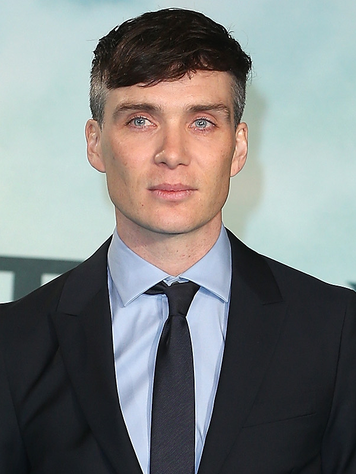
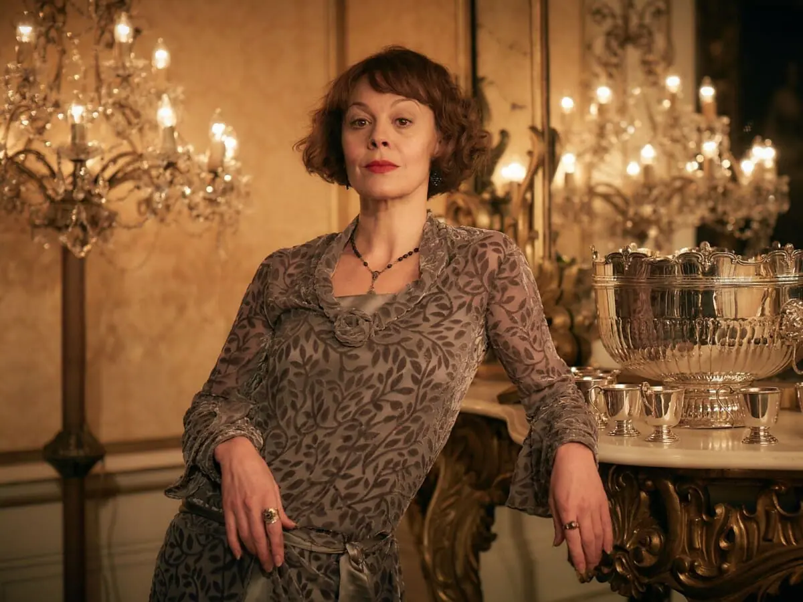
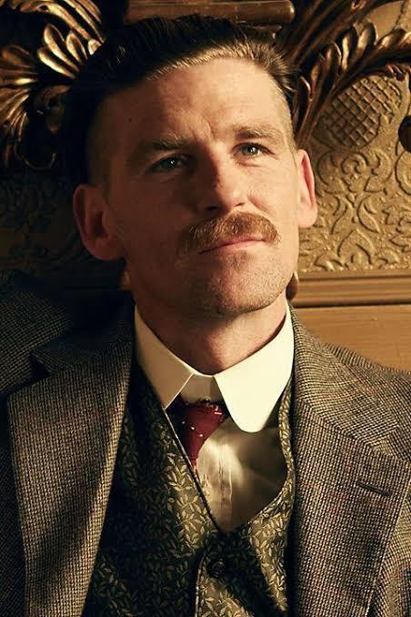
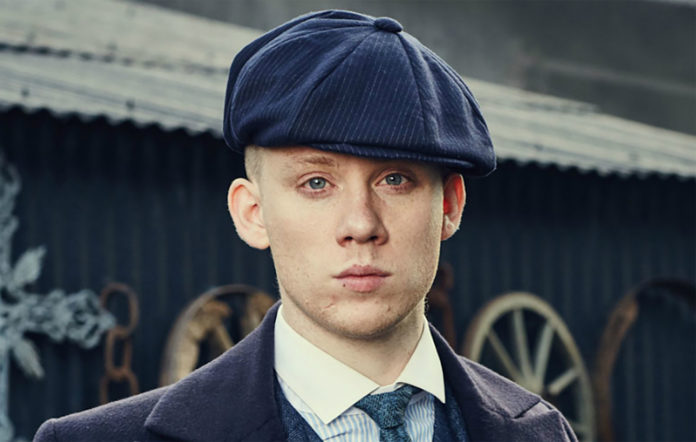
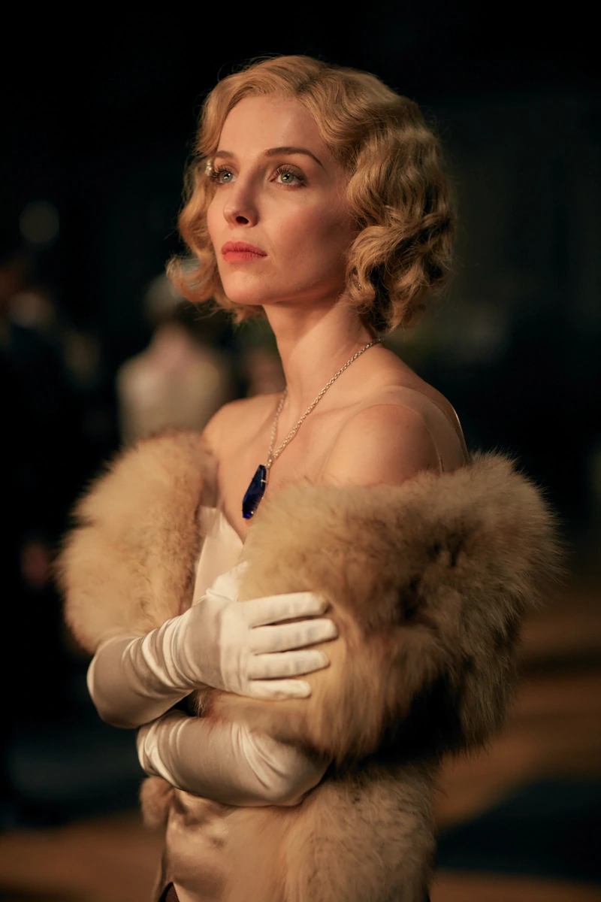

Cillian Murphy interpreta o papel de Thomas Shelby na série, ele é um ator ator e músico irlandês de teatro, cinema e televisão. Tendo iniciado sua carreira artística como vocalista, pianista e compositor de uma banda de rock.

Helen Elizabeth McCrory foi uma atriz britânica vencedora do prêmio BAFTA, conhecida por interpretar Cherie Blair no filme The Queen, Narcisa Malfoy na saga Harry Potter, e Elizabeth “Polly” Gray no seriado britânico Peaky Blinders.

Paul Anderson é um ator britânico. Ele ganhou destaque por interpretar Arthur Shelby Jr. em Peaky Blinders, Anderson em The Revenant e Sebastian Moran em Sherlock Holmes: A Game of Shadows.

Joseph Michael Cole é um ator inglês de Kingston, Londres. Alguns de seus papéis mais notáveis incluem: Luke em Skins, Tommy em Offender, John Shelby em Peaky Blinders.

Annabelle Frances Wallis é uma atriz britânica. Ela é mais conhecida por interpretar Grace Burgess na série de televisão Peaky Blinders, Jenny Halsey em A Múmia e Mia em Annabelle.
Voltar para página inicial